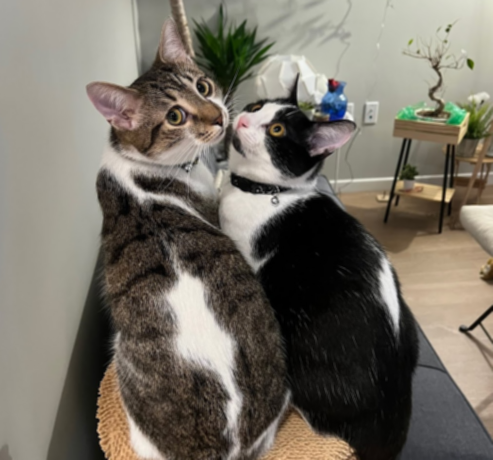
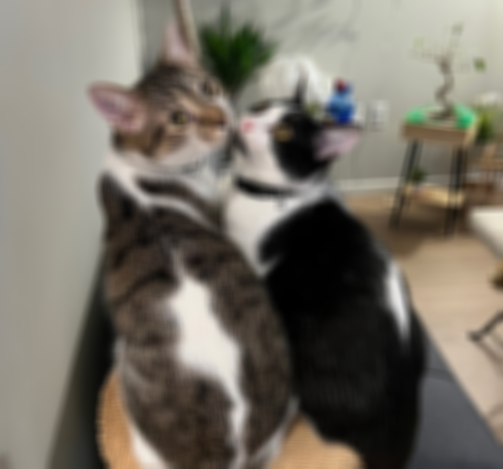
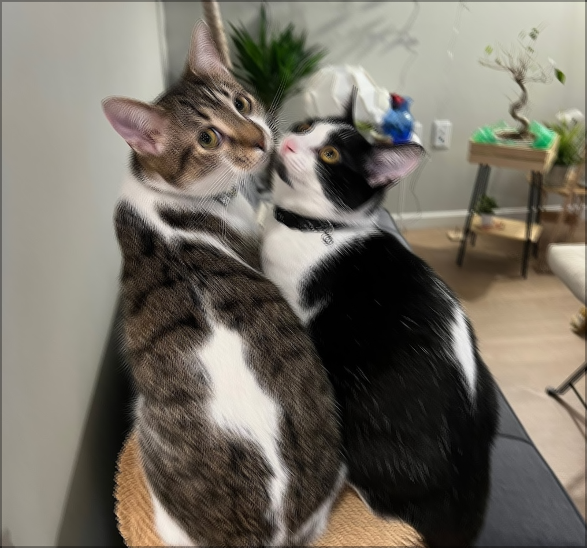

Function Pointers And Image Filters
Chris Tralie
You can obtain today's code with
git clone --recursive https://github.com/ursinus-cs174-s2022/Week13_ImageFilters.git
Mean Blur
|  |  |
Motion Blur
Each pixel [x, y] is the average of [x-3, y-3], [x, y], and [x+3, y+3]
|  |
Sharpen
Make the pixel 9*[x, y] minus the surrounding 8 pixels
| -1 | -1 | -1 |
| -1 | 9 | -1 |
| -1 | -1 | -1 |
 |
Emboss
Take the pixels in the following pattern
| -1 | -1 | 0 |
| -1 | 0 | 1 |
| 0 | 1 | 1 |